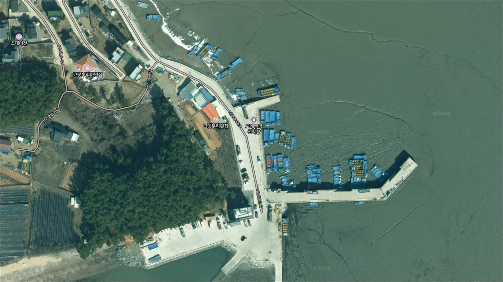
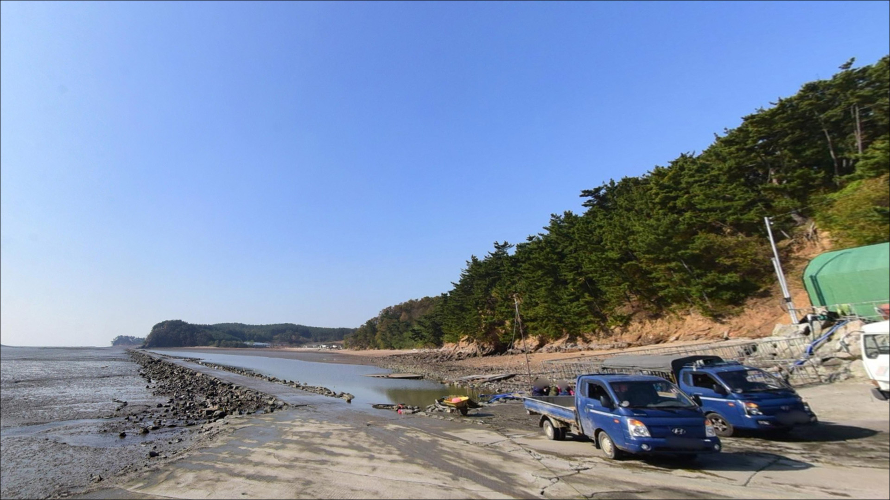
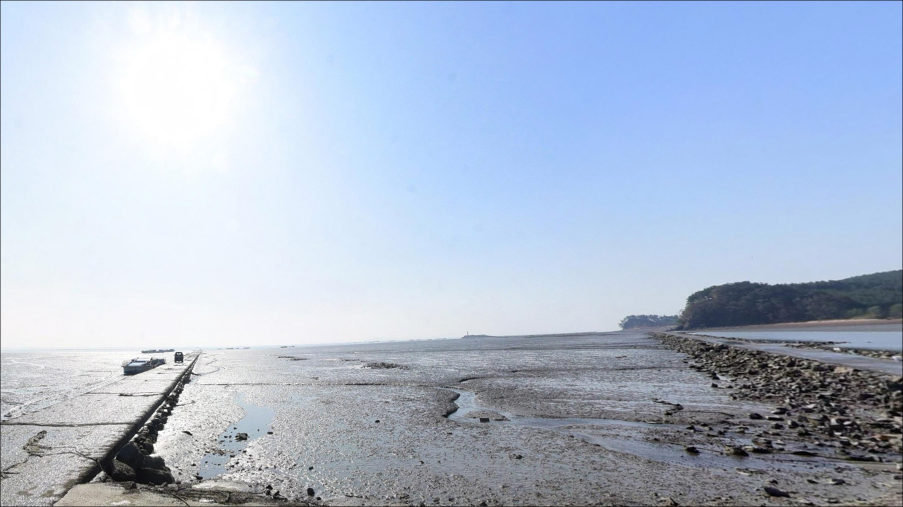
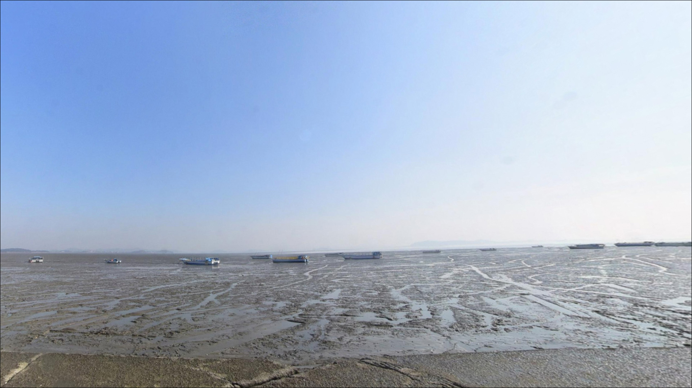
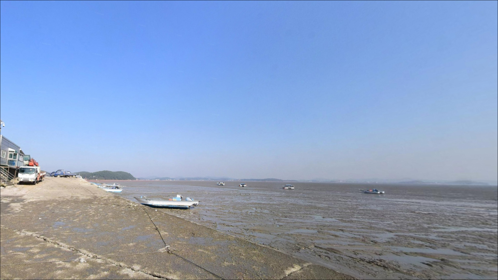
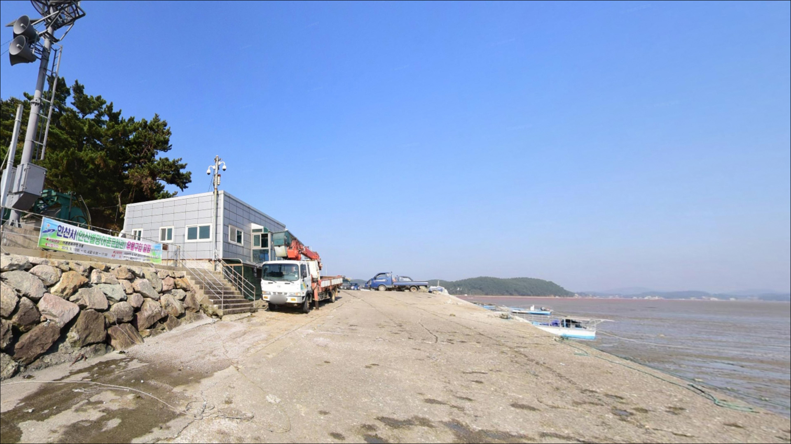
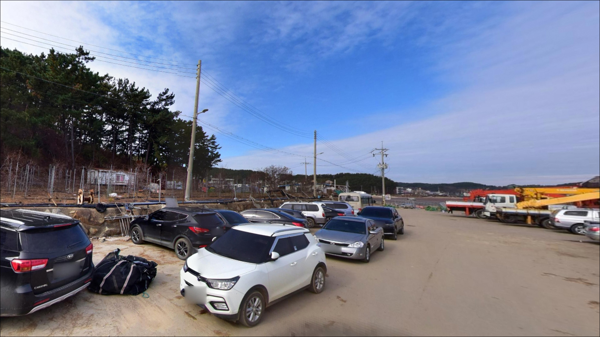
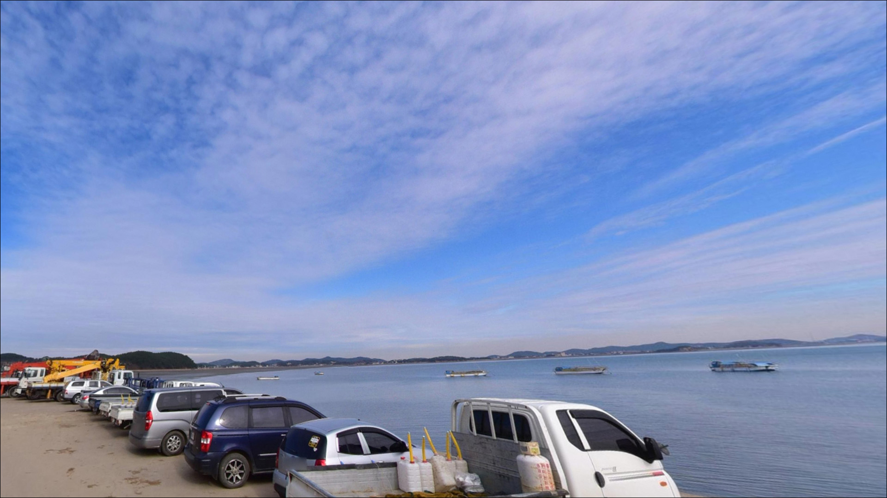
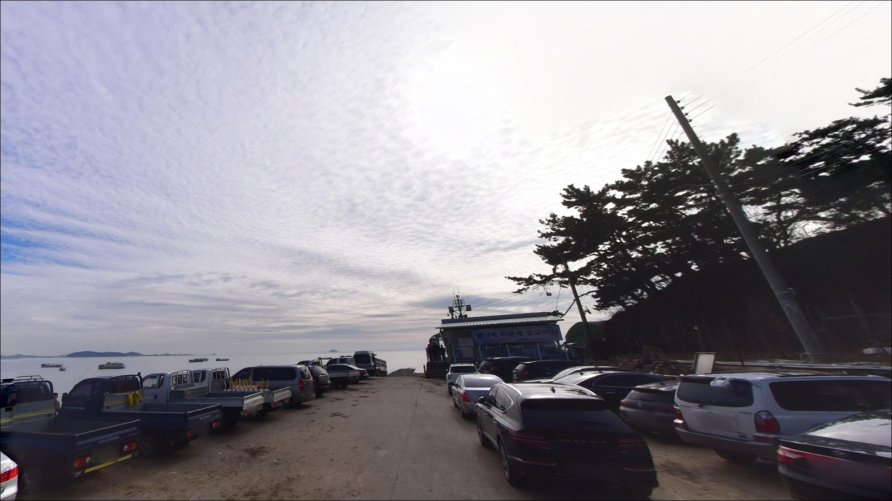

행낭곡항, 고랫부리선착장 경기 안산시 고요한 수면을 바라보며 차박, 낚시를 즐기기 좋은 해안
이 페이지에는 광고(제휴 링크 포함)가 있으며, 광고 링크를 통해 구매하면 운영자가 판매 수익 또는 수수료를 받을 수 있습니다. 포인트 사진: 카카오맵 스카이뷰·로드뷰. 이 페이지의 지도·사진 이미지는 카카오맵의 실제 서비스 이미지와 다를 수 있습니다.


행낭곡항
경기 안산시 단원구 대부남동 529-2
행낭곡항은 간조 시 내항 바닥이 드러나는
서해 갯벌형 포인트입니다.
물때 확인 없이 방문하면 채비를 내릴 수심 자체가
없어지는 상황을 만날 수 있어,
들물 타이밍을 먼저 계산하는 것이
이 포인트 방문의 출발점입니다.
이 글은
행낭곡항의 지형 구조와 물때 판단 기준,
낚시 방식별 공략 여건, 진입 환경, 차박 여건에 집중합니다.
조황 단정이나 특정 어종 보장은
이 글의 범위에 포함되지 않습니다.

1. 진입 동선과 포인트 접근성
행낭곡항으로 향하는 진입로는
대부남동 마을 안길을 통과하는 구조입니다.
대부도 내부 도로는 섬 규모 대비 전반적으로
정비되어 있는 편이지만,
행낭곡항으로 이어지는 해안 소로는
왕복 통행이 빠듯한 수준의 폭으로
이어지는 구간이 있습니다.
승용차나 소형 SUV는 진입 자체에
큰 어려움이 없는 편이지만,
대형 차량이나 루프탑 장비를 갖춘 차량이라면
출발 전에 위성지도로 진입로를
한 번 확인하고 가는 것이 안전합니다.
소형 어촌 포구 특성상
회차 공간이 넉넉하지 않을 수 있어
후진 진출 여부도 함께 살펴야 합니다.
주차는 방파제 입구 인근 공터나
선착장 배후 공간을 활용하는 방식이 일반적입니다.
어민 작업 차량이 수시로 드나드는 공간이므로
어선 이동 동선을 막지 않는 자리가 우선이고,
공간이 여의치 않을 경우를 대비해
대안 주차 위치를 미리 파악해 두는 편이 좋습니다.

2. 차박 환경 평가 및 야간 체류 여건
행낭곡항은 소규모 어촌 마을과 인접해 있어
야간에도 완전히 외딴 분위기는 아닙니다.
민가 밀집도가 낮은 편이라
프라이버시 수준은 중간 정도로 볼 수 있으나,
가로등이 드문 구조라
개인 조명 장비 준비는 필수입니다.
특히 방파제 야간 이동 시 헤드랜턴은 빠질 수 없습니다.
서해 갯벌 인접 지형 특성상 조류가 빠지는 시간대에는
바람 방향에 따라 갯벌 냄새가 날 수 있습니다.
낚시를 마치고 조용히 하룻밤 머무는 용도로는
나쁘지 않은 환경이지만,
주차 공간이 협소해
차박을 메인 목적으로 삼기에는
현장 공간 여건 확인이 먼저입니다.
항구 인근 공터 이용 시에는
2024년 9월부터 시행된 주차장법 개정으로
공영주차장에서의 야영·취사가 금지되어 있으므로,
체류 형태와 취사 방식을
사전에 확인해 두는 것이 안전합니다.


3. 주변 편의시설 및 인프라 현황
행낭곡항 인근에서 확정된 편의시설 정보는
현재 확인되지 않습니다.
대부남동 해안 마을 특성상
반경 3km 이내에 편의점이나 식당을
바로 기대하기는 어려운 편으로,
식수·얼음·미끼·연료는 출발 전 완비하는 것이
현실적인 준비 방식입니다.
대부도 내부 중심부 방향으로 이동하면
편의점과 마트, 식당 등을 이용할 수 있는 여지가 있습니다.
방아머리 방면이나 탄도항 인근 상권이
이동 동선으로 활용할 수 있는 가장 현실적인 대안입니다.
부족한 채비나 소품은 출조 전에
그쪽 방향에서 미리 챙기는 편이 효율적입니다.
행낭곡항은 어촌뉴딜300 사업 및
어촌신활력증진사업 대상지로 선정된 바 있어,
향후 항구 시설이 일부 정비될 가능성이 있습니다.
공사 진행 중인 구간이 있을 수 있으므로
방문 전 현장 상황을 미리 확인해 두는 편이 좋습니다.

4. 방문 전 반드시 챙겨야 할 준비사항
행낭곡항 방문 전 가장 먼저 확인할 것은
물때입니다.
서해 대부도 일대는 조수간만의 차가 큰 지역으로,
간조 전후에는 내항 바닥이 드러나거나
방파제 아래 수심이 크게 낮아집니다.
바다타임에서 대부남동 기준 물때를 확인하고
들물 초기(2~4물) 타이밍에 맞춰
입장 시각을 잡는 것이 기본 전략입니다.
들물이란 간조 이후 수위가 다시 높아지기 시작하는
조류 흐름으로,
이 시간대에 어종의 먹이 활동이 살아나는
패턴이 이 권역 방파제 전반에서 나타납니다.
들물 시작 1~2시간 전에 자리를 잡으면
조류 변화 흐름을 타기 좋은 타이밍이 됩니다.
기상 변화가 비교적 빠른 해안이므로
기상청 예보는 당일 아침에 다시 한번 확인하는 것이
헛걸음을 막는 조건입니다.
야간 낚시 시에는 구명조끼와 헤드랜턴을 반드시 챙겨야 하고,
방파제 미끄럼 방지 신발도 빠뜨리지 않는 것이 좋습니다.
어선 이동 동선과 어구를 건드리지 않도록
자리를 잡는 것이 기본 매너입니다.

5. 물때를 놓치면 낚시 자리가 사라지는 이유
행낭곡항이 자리한 대부도 남쪽 해안은
서해 특유의 갯벌형 지형입니다.
방파제와 선착장을 중심으로 한 소규모 어촌 포구 구조로,
내항은 수심이 얕고 간조 시 바닥이 드러날 가능성이 높습니다.
방파제 외항 방향으로 나갈수록
상대적으로 수심이 깊어지는 편이며,
조류 영향도 내항보다 크게 나타납니다.
방파제 끝단은 만조 전후 수심이 확보되는 시간대에
외항 방향으로 채비를 보내는 것이
이 포인트의 기본 전략입니다.
간조로 넘어가는 시점에는 수심이 급격히 낮아지므로,
정조 이후 조류가 바뀌는 타이밍에
채비 운용 방식을 함께 조정해야 합니다.
바닥은 모래와 뻘이 섞인 구조로 추정되어
원투낚시 채비의 밑걸림은
암초 지형보다 적은 편입니다.
단, 들물 시 조류가 흐르는 방향으로
채비가 쓸려가는 정도가 달라지므로
봉돌 무게는 조류 세기에 맞춰
현장에서 조정하는 것이 유리합니다.
최신 조황은 방문 전에 꼭 검색해 보시기 바랍니다.
"행낭곡항 낚시", "대부도 남부 방파제 조황" 등의 키워드가
현장 상황을 파악하는 데 도움이 됩니다.


6. 포인트에 어울리는 낚시 스타일
이 포인트에서 가장 기본이 되는 낚시는
원투낚시입니다.
갯벌형 서해 방파제 특성상
청갯지렁이나 참갯지렁이를 미끼로
방파제 끝단 외항 방향으로 멀리 던지는 방식이
대부도 남부 해안에서 가장 무난한 공략법입니다.
망둥어와 숭어, 붕장어 계열을
기대해 볼 수 있는 지형 조건입니다.
루어낚시도 이 포인트 구조에 맞는 스타일입니다.
방파제 끝단이나 석축 경계부에서
소형 지그헤드나 메탈지그 채비로
조류가 흐르는 방향을 노리면
농어나 노래미 계열을 탐색해 볼 수 있습니다.
들물 시작 전후로
야간 입질이 살아나는 경향이
이 해안선 방파제 전반에서 나타납니다.
찌낚시도 만조 전후 수심이 확보된 시간대에는
선착장 주변이나 방파제 내측에서 운용해볼 수 있습니다.
내항 수심이 확보된 타이밍에
가벼운 채비로 중층을 탐색하는 방식이며,
우럭이나 노래미 계열을
기대해 볼 수 있는 지형 조건입니다.
단, 내항은 조류 영향이 약해
들물이 본격 들어오기 전까지는 채비 흐름이 느린 편입니다.

7. 대안 포인트와 플랜 B 동선
행낭곡항 여건이 기대에 못 미칠 때
가장 먼저 고려해볼 수 있는 대안은
탄도항입니다.
대부도 내 대표 지방어항으로
방파제 길이가 길고 내·외항 모두 낚시 접근이 가능하며,
간조 때도 어느 정도 수심이 유지되는 구조로
알려져 있습니다.
낚시 관련 정보가 이 권역에서 가장 많이 쌓인 포인트이기도 합니다.
선감항과 흘곶항도
같은 어촌뉴딜 권역에 묶인 항구들로,
행낭곡항에서 차량으로 이동 가능한 거리입니다.
비교적 한적한 분위기를 유지하는 편이라
혼잡이 부담스러운 낚시꾼에게
조용한 대안 포인트로 활용할 수 있습니다.
더 넓은 범위로 이동한다면
방아머리 선착장 일대도 선택지에 들어옵니다.
대부도 북쪽으로 이동하는 동선이지만
원투낚시 외에 주변 포인트를
폭넓게 탐색하기 좋은 기점이 됩니다.
탄도항과 방아머리 두 곳을 묶어
이동 동선을 짜 두면
행낭곡항이 기대에 못 미쳐도 당일이 허탕으로 끝나지 않습니다.

물때 맞춰 들어가면
달라 보이는 행낭곡항
서해 방파제 낚시에 익숙하고
원투낚시나 루어낚시를 즐기는 낚시꾼이라면
행낭곡항의 갯벌형 지형 조건은
충분히 공략해볼 만한 구조입니다.
들물 타이밍을 잘 맞추고 외항 방향으로 자리를 잡으면
조용한 어촌 포구 분위기 속에서
낚시 여건이 살아나는 구간을 경험할 수 있는 곳입니다.
반면 물때 확인 없이 간조 시간대에 도착하거나,
주차 공간을 현장에서만 확인하다 낭패를 보는 경우가
이 포인트에서 반복되는 실수입니다.
물때 확인, 자급 준비, 진입로 점검,
이 세 가지를 갖추고 간다면
대부도 남쪽의 조용한 어촌 포인트로서
기억에 남는 출조가 될 수 있는 곳입니다.
낚시를 마치고 조용히 하룻밤 머무는
차박 여행자라면,
현장 공간 여건과 체류 형태를 미리 확인해두면
낚시와 차박을 함께 즐기기 좋은
출조가 될 수 있습니다.